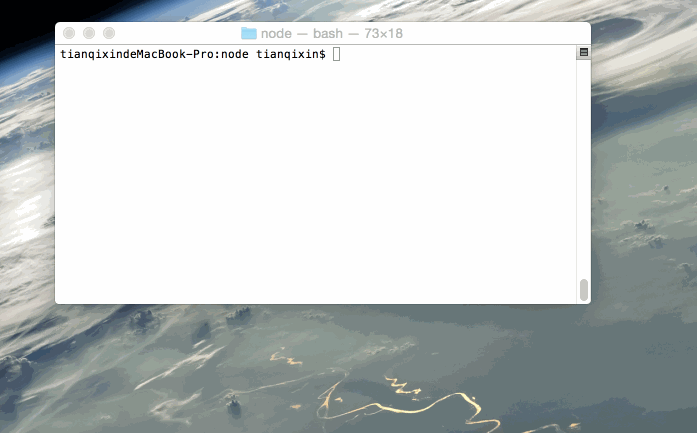

Node.js 教程

简单的说 Node.js 就是运行在服务端的 JavaScript。
Node.js 是一个基于Chrome JavaScript 运行时建立的一个平台。
Node.js是一个事件驱动I/O服务端JavaScript环境，基于Google的V8引擎，V8引擎执行Javascript的速度非常快，性能非常好。
谁适合阅读本教程？
如果你是一个前端程序员，你不懂的像PHP、Python或Ruby等动态编程语言，然后你想创建自己的服务，那么Node.js是一个非常好的选择。
Node.js 是运行在服务端的 JavaScript，如果你熟悉Javascript，那么你将会很容易的学会Node.js。
当然，如果你是后端程序员，想部署一些高性能的服务，那么学习Node.js也是一个非常好的选择。
学习本教程前你需要了解
在继续本教程之前，你应该了解一些基本的计算机编程术语。如果你学习过Javascript,PHP，Java等编程语言，将有助于你更快的了解Node.js编程。
第一个Node.js程序：Hello World！
脚本模式
以下是我们的第一个Node.js程序：
保存该文件，文件名为 helloworld.js， 并通过 node命令来执行：
node helloworld.js
程序执行后，正常的话，就会在终端输出 Hello World。
交互模式
打开终端，键入node进入命令交互模式，可以输入一条代码语句后立即执行并显示结果，例如：
$ node
> console.log('Hello World!');
Hello World!
Gif 实例演示
接下来我们通过 Gif 图为大家演示实例操作：
